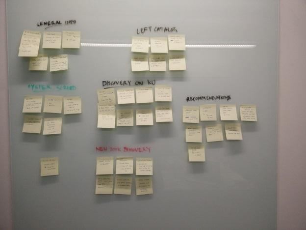

User research and exploratory design.
In the Summer of 2015, I was a Design Intern at Amazon. I was assigned to the Kindle Content Design team and was tasked with studying and redesigning the Kindle Unlimited web experience. Unfortunately, I can't share any of these designs online but I can show them in person.
I performed competitive analysis on the Scribd & Oyster Books web products. I created and pitched a research plan for remote usability testing. The main goal of the proposal was to find discoverability issues on Kindle Unlimited in the first part of my internship. The tests were approximately one-hour remote interactions with customers where I asked them to carry out tasks and observed their interactions within the existing framework. I also looked at assessing what people actually like about the experience too.
I then carried out remote usability testing on Kindle Unlimited Web users, extracted actionable insights using affinity diagramming.

I then worked on low fidelity wireframes and high fidelity prototypes. I went beyond expectations and identified short term fixes that could be fixed easily. I built a case for each recommendation using quantitative data from Amazon's internal web analytics & A/B testing platform. I also observed other areas of the experience like search, wishlist and new content discovery. I worked with the product manager to convert my insights for the Kindle Store including a suggestion for a new feature.
During the course of my internship, I followed a data informed approach and adhered to Amazon's customer obsession philosophy. I presented to several team members, received feedback and integrated it into my work.
Finally, I designed explorations for the Kindle Unlimited storefront. These included redesigning the landing page, the sign up page, the recommendations feature, and the carousels. I also came up with brand new designs for an onboarding process and a curatorial section for featuring books.